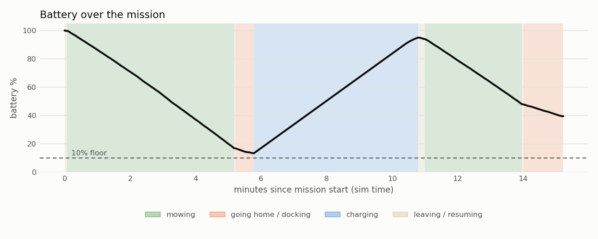

Going home: a battery that runs down, a dock that has to be hit to 4 cm
A mower that mows until the battery dies in the middle of the lawn isn't a product. This milestone gave the simulated mower a battery that drains by what it's actually doing, a dock with charging contacts, and a mission that goes home when it must, charges, and comes back to exactly where it stopped. It took three runs, and the two failures were both about the last few centimetres.
A battery with physics, not a timer
The Phase 1 battery drained at a fixed rate. Now mowbot_power/pack.py turns the robot's real activity into watts,
using the energy budget from the electrical design:
- 9 W for the computer and sensors, always
- drive: 15 N of rolling resistance × wheel speed ÷ 60% efficiency, plus a scrub term for pivots (tyres dragged sideways), so a pivot costs more than rolling at the same wheel speed
- blade: 30 W at full speed
That gives 52 W mowing straight, against the budget's ≈ 55 W. The pack is 7 cells of Li-ion at 6 Ah (155 Wh) with an open-circuit-voltage curve, sag under load, and a charger that tapers and terminates like a real one. Every number is a parameter, because every one of them gets replaced by a measurement when the real robot exists.
For the experiment I gave the mower a toy pack (0.2 Ah), so a 10-minute sim mission has to go home once.
The mission becomes a state machine
LEAVE ─▶ MOW ─(battery low)─▶ SPINDOWN ─▶ RETURN ─▶ DOCK ─▶ CHARGE ─▶ LEAVE ─▶ RESUME ─▶ MOW ─(done)─▶ … ─▶ DOCK
▲ │
└ REDOCK (no contact: back out 0.8 m, try again, max 3)
Some rules that came from thinking about the real yard:
- When to go home is reserve (15%) + 1.5 × the energy for the trip, not a fixed percentage: far from the dock, leave earlier.
- Only from a safe spot. If the battery runs low while the robot is on the lap 0.40 m from the flowerbed, turning for home there would swing the nose into the bed. It mows on to the next point where a pivot is safe.
- Blade off and stopped before leaving the lawn. A 3 s spin-down standing still.
- Reversing off the dock is blind (the lidar looks forward), so it's slow (0.15 m/s), short, and only along the path it drove in on. A rear sensor is on the plan.
Run 1: the heading that wandered off while charging
power-test-1 went home at 17%, docked, charged, resumed and finished. The power report passed. But the localization
report failed: a 17.7 cm position error, while the robot was reversing straight off the dock. The estimated heading
swung to 43° and back in three seconds; the gyro and wheels both said it wasn't turning.
With no compass, heading is only observable while the robot moves: RTK positions over time. Five minutes parked on the
charger, the filter's heading uncertainty grew with every prediction step, and the first RTK fixes after it moved
were allowed to swing it. The fix is what real mowers do: the dock is a landmark. Seated on the contacts, the
robot's heading is the dock's heading, to a few degrees. A small node (dock_anchor) feeds that to the global EKF
while the robot is docked.
Run 2: pure pursuit's dirty secret
power-test-2 docked, lost contact 1.1 s later, and failed all three retries. Ground truth showed why: in the last
30 cm the robot swung its heading from +6° to −10° at up to 1 rad/s, touched the contacts at −5°, and its turning
momentum carried it to −23°, off the 8° window.
Pure pursuit steers with curvature 2·y / L², where L is the distance to the aim point. Clamp the aim point to the end of the path and, as the robot arrives, L goes to zero: 1 cm of RTK noise at 5 cm out is a curvature of 8. The offline docking test hadn't caught it because its localization was perfect. Two fixes:
- the path now extends past its end, so the aim point stays a full lookahead away
- the replay tool gained localization noise (1.5 cm, 0.5°), and a new test checks the turn rate in the last 30 cm. I checked that the test fails on the old code before trusting it.
Run 3: home and back

| Check | power-test-3 |
|---|---|
| Coverage of the reachable area | 95.5% (PASS) |
| Keep-out incursions | 0 |
| Lowest battery | 13.4% (floor 10%) |
| Dockings | 2, one needed a second attempt; contact error 1.1 cm / 0.4° and 0.4 cm / 0.2° |
| Resumed where it stopped | yes (s = 84.0 m) |
| Localization max error | 6.8 cm (was 17.7 cm) |
And the first real energy number: mowing costs about 208 mWh per m² in this model, and the trips home add 10%. One 155 Wh design pack would mow about 576 m² per charge. That's a number to check with a wattmeter on a real lawn, which is exactly why the report prints it.
What I learned
- The last centimetre is a different problem from the last metre. Path following that's excellent at mowing (8 cm) fell apart at the dock, because the maths of the controller changes as the target gets close.
- Test with the noise in. A perfect-localization test proved the geometry and hid the instability.
- Landmarks you already own are free. The dock fixes position for charging and heading for localization.
Next: the full back yard, and physical buttons (STOP, HOME/GO) and a status light, simulated first.